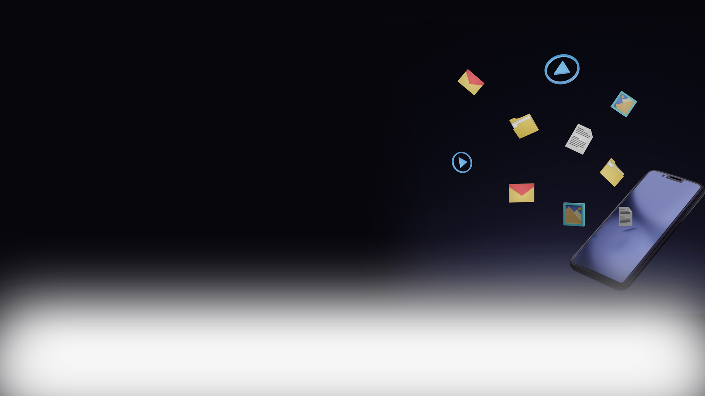
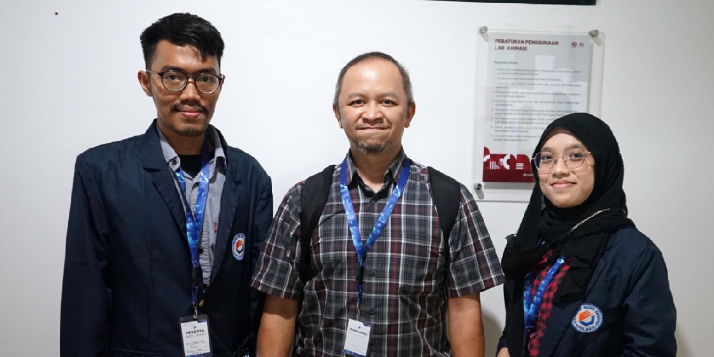

<!DOCTYPE html>
<!-- Skrip HTML5 -->

<!-- 
    Nama : Dhiya Fakhar Nafi
    Kelas : D4 IT-3A
    NIM : 201524002
    Tanggal Mulai : 31 Agustus 2022
    Tanggal Selesai : 04 September 2022
-->
<html lang="en">
    <head>
        <meta charset="UTF-8">
        <link rel="icon" href="assets/favicon-32x32.png">
        <title>Welcome To Dhisan Daichi</title>
        <link rel="stylesheet" href="style.css">
        <link rel="stylesheet" href="teks.css">
    </head>
</html>

<!-- Skrip Body -->
<body>
<div class="banner">
    
    
    
    <div class="layer-3">
        <h1> Selamat Datang </h1>
        <a href="https://www.linkedin.com/in/dhisan-daichi/">Follow My Linkedin </a>
        <a href="#teks"> Know More About Me </a>
    </div>
</div>


<div class="content" id="teks">
    
    
    <div class="container">
        <p>Berkenalan dengan <span class="typed-text"></span><span class="cursor">&nbsp;</span></p>
      </div>

    <p class="paragraf">
        Saya adalah seorang Mahasiswa dari salah satu kampus di Tanah Parahyangan yang selalu memiliki semangat untuk belajar hal baru.
        Saya merupakan mahasiswa kelas D4-IT 3A yang berasal dari Politeknik Negeri Bandung. Saya sedang menempuh semester 5.
    </p>
    
    <h1 class="posisi"> Pengalaman </h1>
    <p class="paragraf">
        Saya merupakan anggota dari Unit Kegiatan Mahasiswa ASSALAM, PHM DKM LH, dan juga berkontribusi pada kegiatan yang dilaksanakan oleh Himpunan Mahasiswa Komputer (HIMAKOM).
        Saya diberikan amanah untuk menjadi Ketua Tim Desain pada divisi Syiar di ASSALAM, anggota Lembaga Pengembangan Media PHM DKM LH, dan Biro Kominfo di HIMAKOM.
    </p>

    <h1 class="posisi"> Pencapaian </h1>
    <p class="paragraf">
        Saya sering mengikuti kompetisi untuk mengukur kemampuan saya. Saya sering mengikuti kompetisi desain grafis dan multimedia. Meskipun demikian, saya selalu ingin mencoba hal baru.
        Saat SMA, saya berhasil mendapatkan posisi 3 besar untuk beberapa mata lomba seperti Lomba Video dan Desain Poster. Baru-baru ini, saya mengikuti kegiatan KMIPN 4 yang dilaksanakan
        di Politeknik Negeri Batam. Meskipun saya hanya berhasil menjadi Finalis, namun saya sudah merasa cukup hingga saat ini.
    </p>

    <h1 class="posisi"> Keinginan </h1>
    <p class="paragraf">
        Sebagai seseorang yang tertarik pada bidang transportasi, saya ingin mengunjungi berbagai kota-kota besar dan tempat yang tersembunyi di seluruh Indonesia. Saya ingin mengembangkan
        dan membagikan pengalaman saya ke orang banyak setelah mengunjungi tempat-tempat tersebut.
    </p>

    <h1 class="posisi"> Cita-cita </h1>
    <p class="paragraf">
        Dulu, saat saya berada di tingkat Sekolah Dasar, saya ingin menjadi seorang Masinis. Saat SMP, saya ingin menjadi pegawai di PT. Kereta Api Indonesia. Saat SMA, saya ingin menjadi seorang
        Desain Grafis yang menekuni bidang perfilman. Namun, saat ini, saya bercita-cita menjadi seorang Data Analyst dan UI/UX Designer.
    </p>
</div>

<!-- Footer -->
<div class="container">
    <div class="konten">
      <h1>Mission 2 : Javascript</h1>
      <p>Dhiya Fakhar Nafi</p>
    </div>
  </div>

<!-- Skrip Javascript -->

<script type="text/javascript">
/* Menggerakan Gambar */    
    let layer_1 = document.querySelector('.layer-1');
    let layer_2 = document.querySelector('.layer-2');
    let layer_3 = document.querySelector('.layer-3');
    
    window.onscroll = function(){
        let Y = window.scrollY;

        layer_1.style.transform = 'translateY('+ Y/2 +'px)'
        layer_2.style.transform = 'translateY('+ Y/2 +'px)'
        layer_3.style.transform = 'translateY('+ Y/1.5 +'px)'

    }

    train.onclick = function() {
      let start = Date.now();

      let timer = setInterval(function() {
        let timePassed = Date.now() - start;

        train.style.left = timePassed / 5 + 'px';

        if (timePassed > 3000) clearInterval(timer);

      }, 20);
    }

/* Animasi Teks */
const typedTextSpan = document.querySelector(".typed-text");
const cursorSpan = document.querySelector(".cursor");

const textArray = ["Dhiya Fakhar", "DhiyDhiy", "Dhisan Daichi", "Dhiya"];
const typingDelay = 200;
const erasingDelay = 100;
const newTextDelay = 2000; // Delay between current and next text
let textArrayIndex = 0;
let charIndex = 0;

/* Fungsi Type */
function type() {
  if (charIndex < textArray[textArrayIndex].length) {
    if(!cursorSpan.classList.contains("typing")) cursorSpan.classList.add("typing");
    typedTextSpan.textContent += textArray[textArrayIndex].charAt(charIndex);
    charIndex++;
    setTimeout(type, typingDelay);
  } 
  else {
    cursorSpan.classList.remove("typing");
  	setTimeout(erase, newTextDelay);
  }
}

/* Fungsi Erase */
function erase() {
	if (charIndex > 0) {
    if(!cursorSpan.classList.contains("typing")) cursorSpan.classList.add("typing");
    typedTextSpan.textContent = textArray[textArrayIndex].substring(0, charIndex-1);
    charIndex--;
    setTimeout(erase, erasingDelay);
  } 
  else {
    cursorSpan.classList.remove("typing");
    textArrayIndex++;
    if(textArrayIndex>=textArray.length) textArrayIndex=0;
    setTimeout(type, typingDelay + 1100);
  }
}

/* DOM Js. */
document.addEventListener("DOMContentLoaded", function() { // On DOM Load initiate the effect
  if(textArray.length) setTimeout(type, newTextDelay + 250);
});

</script>       

</body>
</html>